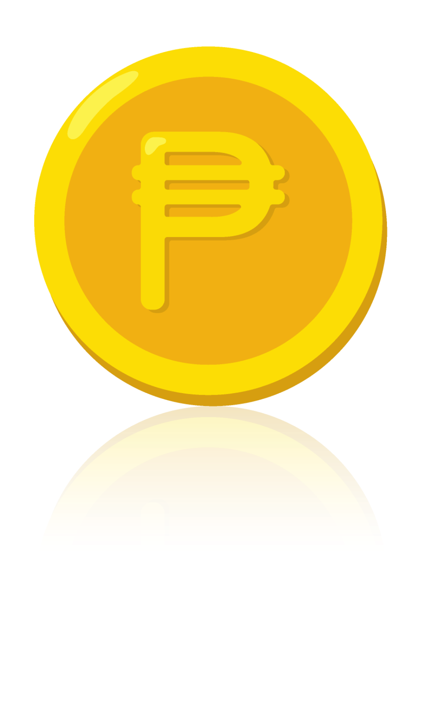

<!-- <div class="three-way-tab-outer-container"> -->
<!-- trust me, just don't look inside this div...  -->
<div class="three-way-tab-container">
  <div class="three-way-tab-inner-container">
    <!--Covers up the dummy tabs-->
    <div class="three-way-tab-bounding-box">&nbsp;</div>
    <!-- dummy tab for the tab at the end of array (for wrap around). -->
    <div
      class="three-way-tab-tab three-way-tab-dummy three-way-tab-repos"
      [ngClass]="{
        'three-way-tab-selected-tab': tabs[2].selected,
        'three-way-tab-move-left': animate==-1,
        'three-way-tab-move-right': animate==1
      }">
      {{tabs[2].text}}
    </div>
    <!-- tab bar -->
    <div class="three-way-tab">
      <!-- real tabs -->
      <div 
        (click)="selectTab(tab)"
        *ngFor="let tab of tabs"
        class="three-way-tab-tab"
        [ngClass]="{
          'three-way-tab-selected-tab': tab.selected,
          'three-way-tab-move-left': animate==-1,
          'three-way-tab-move-right': animate==1
        }">
        {{tab.text}}
      </div>
    </div>
    <!-- dummy tab for the tab at the start of array (for wrap around). -->
    <div
      class="three-way-tab-tab three-way-tab-dummy"
      [ngClass]="{
        'three-way-tab-selected-tab': tabs[0].selected,
        'three-way-tab-move-left': animate==-1,
        'three-way-tab-move-right': animate==1
      }">
      {{tabs[0].text}}
    </div>
  </div>
  <!-- since shadow for the tab bar div is covered up by
  the boudary box, and hidden by overflow:hidden,
  create an empty box with only shadow. -->
  <div class="three-way-tab-shadow-box">&nbsp;</div>
</div>
<!-- </div> -->

<!-- <div class="three-way-tab-phantom"></div> -->
<!-- Display quests that are not completed -->
<div *ngIf="['All','Not done'].includes(this.tabs[1].text)">
  <div *ngFor="let questId of Object.keys(quests.notdone)" (click)="openNotDonePage(questId)" class="quest-container">
    <span class="quest-title">{{quests.notdone[questId].title}}</span>
    <span class="quest-hint">n hints available</span>
    <div class="quest-point-container">
        <span class="quest-point">{{quests.notdone[questId].point}}</span>
      
    </div>
  </div>
</div>

<!-- Display quests that are completed -->
<div *ngIf="['All','Done'].includes(this.tabs[1].text)">
  <div *ngFor="let questId of Object.keys(quests.done)" (click)="openDonePage(questId)" class="quest-container">
    <span class="quest-greyed-title">{{quests.done[questId].title}}</span>
    <span class="quest-greyed-hint">n hints available</span>
    <div class="quest-point-check-container">
        <span class="quest-point-check">{{quests.done[questId].point}}</span>
      
    </div>
  </div>
</div>
